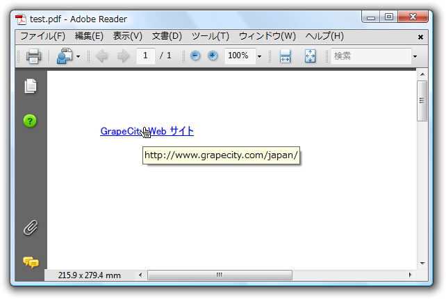

全て展開
全て展開 すべて折りたたむ
すべて折りたたむPDF 仕様により、複数のタイプの注釈をドキュメントに追加できます。多くの場合、注釈は強調表示やメモとして手動で追加されますが、プログラムでも追加できます。C1PdfDocument はハイパーリンク、ハイパーリンクターゲット、および添付ファイルを PDF ドキュメントに追加するメソッドを提供します。
ドキュメントにハイパーリンクを追加するには、AddLink メソッドを使用します。AddLink メソッドは、２つの引数 URL と RectangleF を取ります。URL はテキストを指定し、RectangleF はリンクとして機能する現在のページ上の領域を指定します。
AddLink メソッドは可視の内容をページに追加しないため、通常、AddLink と共に別のコマンドを使用して、ユーザーに表示できるテキストや画像を指定する必要があることに注意してください。たとえば以下のコードでは、「GrapeCity Web サイト」というテキストと、GrapeCity Web サイトを開くリンクを追加します。
Visual Basic コードの書き方
| Visual Basic |
コードのコピー
|
|---|---|
Dim rect As New RectangleF(50, 50, 100, 15)
Dim font As New Font("MS UI Gothic", 10, FontStyle.Underline)
_c1PdfDocument1.AddLink("http://www.grapecity.com/japan/", rect)
_c1PdfDocument1.DrawString("GrapeCity Web サイト", font, Brushes.Blue, rect)
|
|
C# コードの書き方
| C# |
コードのコピー
|
|---|---|
RectangleF rect = new RectangleF(50, 50, 100, 15);
Font font = new Font("MS UI Gothic", 10, FontStyle.Underline);
_c1PdfDocument1.AddLink("http://www.grapecity.com/japan/", rect);
_c1PdfDocument1.DrawString("GrapeCity Web サイト", font, Brushes.Blue, rect);
|
|
 このトピックの作業結果
このトピックの作業結果
また、Web サイトだけでなく、同じ PDF ドキュメント内の別の位置を開くローカルリンクを追加することもできます。このタイプのリンクは、ドキュメント内に目次やインデックスなどのタイプの相互参照を実装する場合に便利です.
ローカルリンクは以下の２つのことを除いて通常のハイパーリンクと同じです
- URL 引数の先頭を" #" にする必要があります。
- AddTargetメソッドを使用し、リンクターゲットの位置を指定する必要があります。AddTarget メソッドは、AddLink と同じ引数、すなわちターゲットの名前と、ユーザーによるリンクのクリック時に表示するページ上の領域をマークする四角形を指定するテキストを取ります。